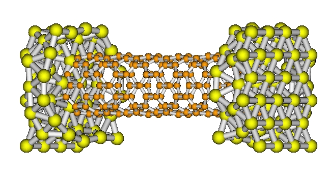
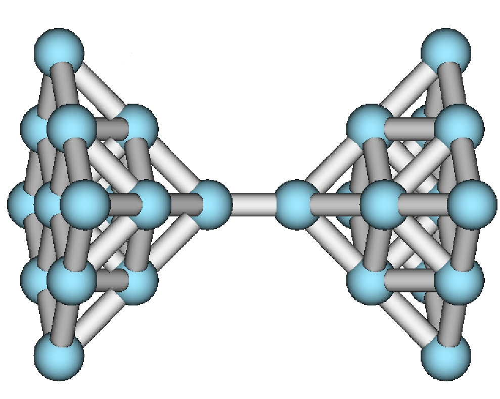
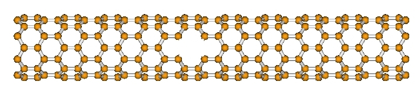

- ANT.Gaussian: This code has been designed as a generic computational tool with application in nanoelectronics. It relies on the Gaussian09 code with which interfaces in a seamless manner. Straightforwad use of ANT.G include the computation of the zero-bias conductance (or, alternatively, the electrical current under an applied bias voltage) of a variety of nanoscale systems such as molecular bridges or simply metallic atomic contacts as those created with scanning tunneling microscope or break junction techniques. The use of ANT.G may also be naturally extended to the computation of scanning tunneling spectroscopy and the simulation of scanning tunneling and electrostatic force microscopy.
-



-
ANT.U: This code is
specifically designed for the computation of the conductance
at zero bias voltage in, e.g., graphene-based systems using
a one-orbital minimal model and on-site interactions
(Hubbard model).